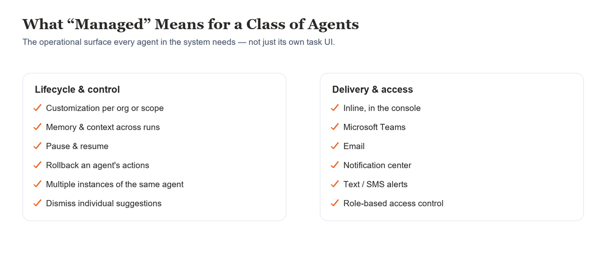
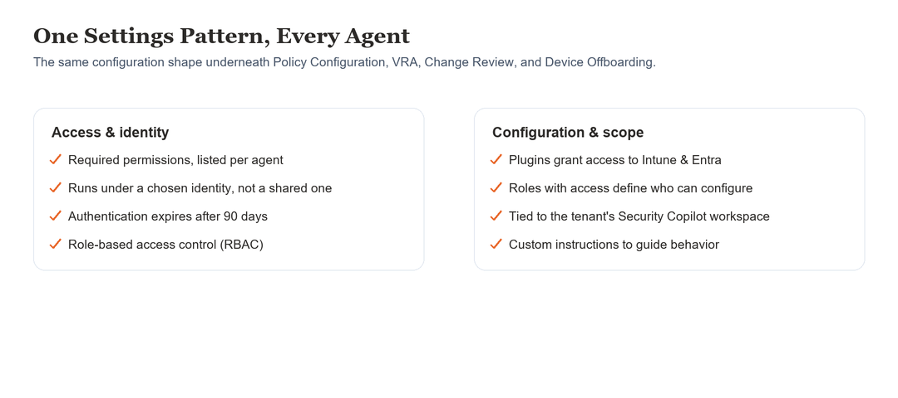

Agents as a Managed System
Admins coordinated remediation across disconnected consoles, with no consistent way to introduce, permission, or govern agents at scale.
- Role
- Experience Strategy & Interaction Design
- Scope
- 4 shipped agents
- Framework
- 1 shared system
Admins used to manually investigate and coordinate remediation across disconnected consoles — spending more time coordinating than solving problems.
Bringing agents into Intune raised a foundational design question: what does it mean to design agents as a category of Intune functionality — not one-off features, but a system that needs to be introduced, permissioned, governed, and managed at scale? Multiple agents were in motion at once — Policy Configuration, Vulnerability Remediation, Change Review, and Device Offboarding — each with different scope, timelines, and levels of readiness.
Four agents — Policy Configuration, Vulnerability Remediation, Change Review, and Device Offboarding — were all in motion at once, built by different teams at different speeds. The real risk wasn’t any single agent shipping badly; it was four teams each answering the same questions differently: how an admin grants an agent access, how the agent reaches admins where they already work, and how every action gets logged and approved before it runs.
Before any one agent could be designed well, the category itself needed a shared framework to design against — role-based access, human-in-the-loop approval, and transparent logging as the default for every agent action, plus consistent delivery through the Intune console and Teams. Every agent after that built on the same foundation instead of each team inventing its own.
Two models for how much agents should do on their own were on the table early.
Opt-out, not opt-in
Agents would act automatically unless an admin turned them off. Ruled out — security and configuration actions carry real organizational risk, and defaulting to automatic action conflicted with Responsible AI principles around user control. Admins also had no way yet to build trust in a system they hadn’t seen work.
Approval gates as the default
Admins review, customize, and approve before anything deploys, with reasoning visible, not just outcomes — automation earns expanded trust over time rather than starting with it. This became the standard every agent in the framework follows.
Four agents, sharing one interaction model and one set of components — not four separate UIs stitched together after the fact. Individual agent screens live on their own chapter pages; what shipped here is the framework underneath all of them.
Every agent follows the same shape, whatever it’s watching for: it’s triggered by a schedule or an event, investigates the relevant state, builds a plan, and presents that plan for review before it does anything. Trust but review, not trust and hope — the plan is always visible before it becomes an action.

Being “managed” meant more than a single task screen. Admins could customize what an agent watches for, pause or resume it, roll back what it did, run multiple instances, or dismiss a suggestion outright — and reach any of that from wherever they already work: the console, Teams, email, or a notification, not one single place they had to remember to check.

Permissions, identity, and configuration followed the same shape too — one settings pattern, reused under every agent rather than redesigned per agent.

Multiple shipped Intune agents (Change Review, Device Offboarding, Policy Configuration, Vulnerability Remediation) reuse the agent framework and interaction patterns I led — published by Microsoft (learn.microsoft.com/intune/copilot/agents). Evidence of pattern adoption across teams; my contribution is the design system, not the pixels.
Every one of these took longer to build than the simpler version would have — deliberately.
Durable artifacts over ephemeral chat
A chat interface would have shipped faster. Admins need to revisit, audit, share, and continue work — chat transcripts can’t support that.
Both standalone and in-context output
Picking one surface would have been simpler. Some agent work needs a dedicated place to live and be audited; other output is most useful right where the admin is already looking.
The patterns built for this framework didn’t stay contained to four agents, or even to Intune. Intune was one of four security products — alongside Entra, Defender, and Purview — building on SFE, a variation of Fluent, to define a shared agent system across the security portfolio. Purview and Defender lean toward investigation; Intune and Entra lean toward action, and Intune in particular deals in scale, bulk device and policy operations that needed more variation than the other three products asked for — while still staying in sync with the shared system instead of forking away from it. A shared Agent section in the Intune Design Toolkit turned what could have been one-off features into reusable components and guidance, adopted by teams building agents after this one, driven by real needs from developing agents in parallel rather than written speculatively.
Durable, auditable artifacts beat ephemeral chat for anything an admin needs to revisit, audit, or share — worth the extra build time.
Approval as the default, not a bolted-on safety net, earns trust faster than defaulting to automation and asking forgiveness.
Building the shared framework before any single agent shipped meant every agent after the first got faster, not slower, to design.